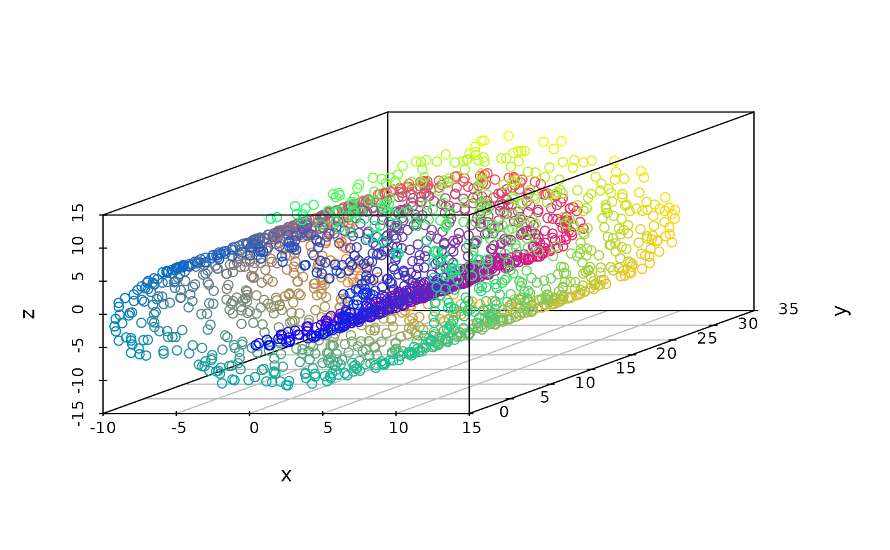

A compilation of standard data sets that are often being used to showcase dimensionality reduction techniques.
Value
loadDataSet an object of class
dimRedData. dataSetList() return a
character string with the implemented data sets
Details
The argument name should be one of
dataSetList(). Partial matching is possible, see
match.arg. Generated data sets contain the internal
coordinates of the manifold in the meta slot. Call
dataSetList() to see what data sets are available.
Examples
## a list of available data sets:
dataSetList()
#> [1] "Swiss Roll" "Broken Swiss Roll" "Helix"
#> [4] "Twin Peaks" "Sphere" "Ball"
#> [7] "FishBowl" "3D S Curve" "variable Noise Helix"
#> [10] "Iris" "Cube"
## Load a data set:
swissRoll <- loadDataSet("Swiss Roll")
# \donttest{
if(requireNamespace("scatterplot3d", quietly = TRUE))
plot(swissRoll, type = "3vars")

# }
## Load Iris data set, partial matching:
loadDataSet("I")
#> An object of class "dimRedData"
#> Slot "data":
#> Sepal.Length Sepal.Width Petal.Length Petal.Width
#> [1,] 5.1 3.5 1.4 0.2
#> [2,] 4.9 3.0 1.4 0.2
#> [3,] 4.7 3.2 1.3 0.2
#> [4,] 4.6 3.1 1.5 0.2
#> [5,] 5.0 3.6 1.4 0.2
#> [6,] 5.4 3.9 1.7 0.4
#> [7,] 4.6 3.4 1.4 0.3
#> [8,] 5.0 3.4 1.5 0.2
#> [9,] 4.4 2.9 1.4 0.2
#> [10,] 4.9 3.1 1.5 0.1
#> [11,] 5.4 3.7 1.5 0.2
#> [12,] 4.8 3.4 1.6 0.2
#> [13,] 4.8 3.0 1.4 0.1
#> [14,] 4.3 3.0 1.1 0.1
#> [15,] 5.8 4.0 1.2 0.2
#> [16,] 5.7 4.4 1.5 0.4
#> [17,] 5.4 3.9 1.3 0.4
#> [18,] 5.1 3.5 1.4 0.3
#> [19,] 5.7 3.8 1.7 0.3
#> [20,] 5.1 3.8 1.5 0.3
#> [21,] 5.4 3.4 1.7 0.2
#> [22,] 5.1 3.7 1.5 0.4
#> [23,] 4.6 3.6 1.0 0.2
#> [24,] 5.1 3.3 1.7 0.5
#> [25,] 4.8 3.4 1.9 0.2
#> [26,] 5.0 3.0 1.6 0.2
#> [27,] 5.0 3.4 1.6 0.4
#> [28,] 5.2 3.5 1.5 0.2
#> [29,] 5.2 3.4 1.4 0.2
#> [30,] 4.7 3.2 1.6 0.2
#> [31,] 4.8 3.1 1.6 0.2
#> [32,] 5.4 3.4 1.5 0.4
#> [33,] 5.2 4.1 1.5 0.1
#> [34,] 5.5 4.2 1.4 0.2
#> [35,] 4.9 3.1 1.5 0.2
#> [36,] 5.0 3.2 1.2 0.2
#> [37,] 5.5 3.5 1.3 0.2
#> [38,] 4.9 3.6 1.4 0.1
#> [39,] 4.4 3.0 1.3 0.2
#> [40,] 5.1 3.4 1.5 0.2
#> [41,] 5.0 3.5 1.3 0.3
#> [42,] 4.5 2.3 1.3 0.3
#> [43,] 4.4 3.2 1.3 0.2
#> [44,] 5.0 3.5 1.6 0.6
#> [45,] 5.1 3.8 1.9 0.4
#> [46,] 4.8 3.0 1.4 0.3
#> [47,] 5.1 3.8 1.6 0.2
#> [48,] 4.6 3.2 1.4 0.2
#> [49,] 5.3 3.7 1.5 0.2
#> [50,] 5.0 3.3 1.4 0.2
#> [51,] 7.0 3.2 4.7 1.4
#> [52,] 6.4 3.2 4.5 1.5
#> [53,] 6.9 3.1 4.9 1.5
#> [54,] 5.5 2.3 4.0 1.3
#> [55,] 6.5 2.8 4.6 1.5
#> [56,] 5.7 2.8 4.5 1.3
#> [57,] 6.3 3.3 4.7 1.6
#> [58,] 4.9 2.4 3.3 1.0
#> [59,] 6.6 2.9 4.6 1.3
#> [60,] 5.2 2.7 3.9 1.4
#> [61,] 5.0 2.0 3.5 1.0
#> [62,] 5.9 3.0 4.2 1.5
#> [63,] 6.0 2.2 4.0 1.0
#> [64,] 6.1 2.9 4.7 1.4
#> [65,] 5.6 2.9 3.6 1.3
#> [66,] 6.7 3.1 4.4 1.4
#> [67,] 5.6 3.0 4.5 1.5
#> [68,] 5.8 2.7 4.1 1.0
#> [69,] 6.2 2.2 4.5 1.5
#> [70,] 5.6 2.5 3.9 1.1
#> [71,] 5.9 3.2 4.8 1.8
#> [72,] 6.1 2.8 4.0 1.3
#> [73,] 6.3 2.5 4.9 1.5
#> [74,] 6.1 2.8 4.7 1.2
#> [75,] 6.4 2.9 4.3 1.3
#> [76,] 6.6 3.0 4.4 1.4
#> [77,] 6.8 2.8 4.8 1.4
#> [78,] 6.7 3.0 5.0 1.7
#> [79,] 6.0 2.9 4.5 1.5
#> [80,] 5.7 2.6 3.5 1.0
#> [81,] 5.5 2.4 3.8 1.1
#> [82,] 5.5 2.4 3.7 1.0
#> [83,] 5.8 2.7 3.9 1.2
#> [84,] 6.0 2.7 5.1 1.6
#> [85,] 5.4 3.0 4.5 1.5
#> [86,] 6.0 3.4 4.5 1.6
#> [87,] 6.7 3.1 4.7 1.5
#> [88,] 6.3 2.3 4.4 1.3
#> [89,] 5.6 3.0 4.1 1.3
#> [90,] 5.5 2.5 4.0 1.3
#> [91,] 5.5 2.6 4.4 1.2
#> [92,] 6.1 3.0 4.6 1.4
#> [93,] 5.8 2.6 4.0 1.2
#> [94,] 5.0 2.3 3.3 1.0
#> [95,] 5.6 2.7 4.2 1.3
#> [96,] 5.7 3.0 4.2 1.2
#> [97,] 5.7 2.9 4.2 1.3
#> [98,] 6.2 2.9 4.3 1.3
#> [99,] 5.1 2.5 3.0 1.1
#> [100,] 5.7 2.8 4.1 1.3
#> [101,] 6.3 3.3 6.0 2.5
#> [102,] 5.8 2.7 5.1 1.9
#> [103,] 7.1 3.0 5.9 2.1
#> [104,] 6.3 2.9 5.6 1.8
#> [105,] 6.5 3.0 5.8 2.2
#> [106,] 7.6 3.0 6.6 2.1
#> [107,] 4.9 2.5 4.5 1.7
#> [108,] 7.3 2.9 6.3 1.8
#> [109,] 6.7 2.5 5.8 1.8
#> [110,] 7.2 3.6 6.1 2.5
#> [111,] 6.5 3.2 5.1 2.0
#> [112,] 6.4 2.7 5.3 1.9
#> [113,] 6.8 3.0 5.5 2.1
#> [114,] 5.7 2.5 5.0 2.0
#> [115,] 5.8 2.8 5.1 2.4
#> [116,] 6.4 3.2 5.3 2.3
#> [117,] 6.5 3.0 5.5 1.8
#> [118,] 7.7 3.8 6.7 2.2
#> [119,] 7.7 2.6 6.9 2.3
#> [120,] 6.0 2.2 5.0 1.5
#> [121,] 6.9 3.2 5.7 2.3
#> [122,] 5.6 2.8 4.9 2.0
#> [123,] 7.7 2.8 6.7 2.0
#> [124,] 6.3 2.7 4.9 1.8
#> [125,] 6.7 3.3 5.7 2.1
#> [126,] 7.2 3.2 6.0 1.8
#> [127,] 6.2 2.8 4.8 1.8
#> [128,] 6.1 3.0 4.9 1.8
#> [129,] 6.4 2.8 5.6 2.1
#> [130,] 7.2 3.0 5.8 1.6
#> [131,] 7.4 2.8 6.1 1.9
#> [132,] 7.9 3.8 6.4 2.0
#> [133,] 6.4 2.8 5.6 2.2
#> [134,] 6.3 2.8 5.1 1.5
#> [135,] 6.1 2.6 5.6 1.4
#> [136,] 7.7 3.0 6.1 2.3
#> [137,] 6.3 3.4 5.6 2.4
#> [138,] 6.4 3.1 5.5 1.8
#> [139,] 6.0 3.0 4.8 1.8
#> [140,] 6.9 3.1 5.4 2.1
#> [141,] 6.7 3.1 5.6 2.4
#> [142,] 6.9 3.1 5.1 2.3
#> [143,] 5.8 2.7 5.1 1.9
#> [144,] 6.8 3.2 5.9 2.3
#> [145,] 6.7 3.3 5.7 2.5
#> [146,] 6.7 3.0 5.2 2.3
#> [147,] 6.3 2.5 5.0 1.9
#> [148,] 6.5 3.0 5.2 2.0
#> [149,] 6.2 3.4 5.4 2.3
#> [150,] 5.9 3.0 5.1 1.8
#>
#> Slot "meta":
#> Species
#> 1 setosa
#> 2 setosa
#> 3 setosa
#> 4 setosa
#> 5 setosa
#> 6 setosa
#> 7 setosa
#> 8 setosa
#> 9 setosa
#> 10 setosa
#> 11 setosa
#> 12 setosa
#> 13 setosa
#> 14 setosa
#> 15 setosa
#> 16 setosa
#> 17 setosa
#> 18 setosa
#> 19 setosa
#> 20 setosa
#> 21 setosa
#> 22 setosa
#> 23 setosa
#> 24 setosa
#> 25 setosa
#> 26 setosa
#> 27 setosa
#> 28 setosa
#> 29 setosa
#> 30 setosa
#> 31 setosa
#> 32 setosa
#> 33 setosa
#> 34 setosa
#> 35 setosa
#> 36 setosa
#> 37 setosa
#> 38 setosa
#> 39 setosa
#> 40 setosa
#> 41 setosa
#> 42 setosa
#> 43 setosa
#> 44 setosa
#> 45 setosa
#> 46 setosa
#> 47 setosa
#> 48 setosa
#> 49 setosa
#> 50 setosa
#> 51 versicolor
#> 52 versicolor
#> 53 versicolor
#> 54 versicolor
#> 55 versicolor
#> 56 versicolor
#> 57 versicolor
#> 58 versicolor
#> 59 versicolor
#> 60 versicolor
#> 61 versicolor
#> 62 versicolor
#> 63 versicolor
#> 64 versicolor
#> 65 versicolor
#> 66 versicolor
#> 67 versicolor
#> 68 versicolor
#> 69 versicolor
#> 70 versicolor
#> 71 versicolor
#> 72 versicolor
#> 73 versicolor
#> 74 versicolor
#> 75 versicolor
#> 76 versicolor
#> 77 versicolor
#> 78 versicolor
#> 79 versicolor
#> 80 versicolor
#> 81 versicolor
#> 82 versicolor
#> 83 versicolor
#> 84 versicolor
#> 85 versicolor
#> 86 versicolor
#> 87 versicolor
#> 88 versicolor
#> 89 versicolor
#> 90 versicolor
#> 91 versicolor
#> 92 versicolor
#> 93 versicolor
#> 94 versicolor
#> 95 versicolor
#> 96 versicolor
#> 97 versicolor
#> 98 versicolor
#> 99 versicolor
#> 100 versicolor
#> 101 virginica
#> 102 virginica
#> 103 virginica
#> 104 virginica
#> 105 virginica
#> 106 virginica
#> 107 virginica
#> 108 virginica
#> 109 virginica
#> 110 virginica
#> 111 virginica
#> 112 virginica
#> 113 virginica
#> 114 virginica
#> 115 virginica
#> 116 virginica
#> 117 virginica
#> 118 virginica
#> 119 virginica
#> 120 virginica
#> 121 virginica
#> 122 virginica
#> 123 virginica
#> 124 virginica
#> 125 virginica
#> 126 virginica
#> 127 virginica
#> 128 virginica
#> 129 virginica
#> 130 virginica
#> 131 virginica
#> 132 virginica
#> 133 virginica
#> 134 virginica
#> 135 virginica
#> 136 virginica
#> 137 virginica
#> 138 virginica
#> 139 virginica
#> 140 virginica
#> 141 virginica
#> 142 virginica
#> 143 virginica
#> 144 virginica
#> 145 virginica
#> 146 virginica
#> 147 virginica
#> 148 virginica
#> 149 virginica
#> 150 virginica
#>